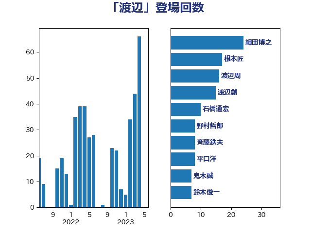

単語「渡辺」

| 細田博之 | 自由民主党 | 24 回 |
| 根本匠 | 自由民主党 | 17 回 |
| 渡辺周 | 立憲民主党 | 16 回 |
| 渡辺創 | 立憲民主党 | 15 回 |
| 石橋通宏 | 立憲民主党 | 10 回 |
| 野村哲郎 | 自由民主党 | 8 回 |
| 斉藤鉄夫 | 公明党 | 8 回 |
| 平口洋 | 自由民主党 | 8 回 |
| 鬼木誠 | 立憲民主党 | 7 回 |
| 鈴木俊一 | 自由民主党 | 7 回 |
| 中根一幸 | 自由民主党 | 7 回 |
| 長島昭久 | 自由民主党 | 6 回 |
| 海江田万里 | 立憲民主党 | 6 回 |
| 山口俊一 | 自由民主党 | 6 回 |
| 高橋千鶴子 | 日本共産党 | 5 回 |
| 笹川博義 | 自由民主党 | 5 回 |
| 林芳正 | 自由民主党 | 5 回 |
| 平木大作 | 公明党 | 5 回 |
| 城井崇 | 立憲民主党 | 5 回 |
| 福山哲郎 | 立憲民主党 | 4 回 |
| 渡辺猛之 | 自由民主党 | 4 回 |
| 梅村みずほ | 日本維新の会 | 4 回 |
| 早坂敦 | 日本維新の会 | 4 回 |
| 斎藤嘉隆 | 立憲民主党 | 4 回 |
| 伊藤渉 | 公明党 | 4 回 |
| 上月良祐 | 自由民主党 | 4 回 |
| 足立康史 | 日本維新の会 | 3 回 |
| 竹内真二 | 公明党 | 3 回 |
| 渡辺孝一 | 自由民主党 | 3 回 |
| 渡辺博道 | 自由民主党 | 3 回 |
| 池畑浩太朗 | 日本維新の会 | 3 回 |
| 後藤祐一 | 立憲民主党 | 3 回 |
| 山井和則 | 立憲民主党 | 3 回 |
| 宮本岳志 | 日本共産党 | 3 回 |
| 大西健介 | 立憲民主党 | 3 回 |
| 大島九州男 | れいわ新選組 | 3 回 |
| 古賀之士 | 立憲民主党 | 3 回 |
| 古川直季 | 自由民主党 | 3 回 |
| 高木毅 | 自由民主党 | 2 回 |
| 青山周平 | 自由民主党 | 2 回 |
| 階猛 | 立憲民主党 | 2 回 |
| 阿達雅志 | 自由民主党 | 2 回 |
| 長浜博行 | 無所属 | 2 回 |
| 鎌田さゆり | 立憲民主党 | 2 回 |
| 野田佳彦 | 立憲民主党 | 2 回 |
| 赤嶺政賢 | 日本共産党 | 2 回 |
| 藤岡隆雄 | 立憲民主党 | 2 回 |
| 葉梨康弘 | 自由民主党 | 2 回 |
| 船田元 | 自由民主党 | 2 回 |
| 竹詰仁 | 国民民主党 | 2 回 |
| 窪田哲也 | 公明党 | 2 回 |
| 稲富修二 | 立憲民主党 | 2 回 |
| 秋葉賢也 | 自由民主党 | 2 回 |
| 福田昭夫 | 立憲民主党 | 2 回 |
| 滝波宏文 | 自由民主党 | 2 回 |
| 浮島智子 | 公明党 | 2 回 |
| 河西宏一 | 公明党 | 2 回 |
| 江藤拓 | 自由民主党 | 2 回 |
| 末松信介 | 自由民主党 | 2 回 |
| 新妻秀規 | 公明党 | 2 回 |
| 広瀬めぐみ | 自由民主党 | 2 回 |
| 山東昭子 | 自由民主党 | 2 回 |
| 小宮山泰子 | 立憲民主党 | 2 回 |
| 小倉將信 | 自由民主党 | 2 回 |
| 寺田学 | 立憲民主党 | 2 回 |
| 大塚耕平 | 国民民主党 | 2 回 |
| 堀井学 | 自由民主党 | 2 回 |
| 和田有一朗 | 日本維新の会 | 2 回 |
| 勝部賢志 | 立憲民主党 | 2 回 |
| 佐藤公治 | 立憲民主党 | 2 回 |
| 伊藤俊輔 | 立憲民主党 | 2 回 |
| 中山展宏 | 自由民主党 | 2 回 |
| 高木かおり | 日本維新の会 | 1 回 |
| 青島健太 | 日本維新の会 | 1 回 |
| 青山大人 | 立憲民主党 | 1 回 |
| 長谷川岳 | 自由民主党 | 1 回 |
| 長友慎治 | 国民民主党 | 1 回 |
| 金田勝年 | 自由民主党 | 1 回 |
| 金子恵美 | 立憲民主党 | 1 回 |
| 金子俊平 | 自由民主党 | 1 回 |
| 重徳和彦 | 立憲民主党 | 1 回 |
| 足立敏之 | 自由民主党 | 1 回 |
| 赤羽一嘉 | 公明党 | 1 回 |
| 谷田川元 | 立憲民主党 | 1 回 |
| 谷川とむ | 自由民主党 | 1 回 |
| 藤川政人 | 自由民主党 | 1 回 |
| 蓮舫 | 立憲民主党 | 1 回 |
| 美延映夫 | 日本維新の会 | 1 回 |
| 紙智子 | 日本共産党 | 1 回 |
| 米山隆一 | 立憲民主党 | 1 回 |
| 空本誠喜 | 日本維新の会 | 1 回 |
| 福岡資麿 | 自由民主党 | 1 回 |
| 石川大我 | 立憲民主党 | 1 回 |
| 石井準一 | 自由民主党 | 1 回 |
| 田中健 | 国民民主党 | 1 回 |
| 玄葉光一郎 | 立憲民主党 | 1 回 |
| 牧島かれん | 自由民主党 | 1 回 |
| 漆間譲司 | 日本維新の会 | 1 回 |
| 滝沢求 | 自由民主党 | 1 回 |
| 浜地雅一 | 公明党 | 1 回 |
| 浜口誠 | 国民民主党 | 1 回 |
| 浅田均 | 日本維新の会 | 1 回 |
| 永岡桂子 | 自由民主党 | 1 回 |
| 櫛渕万里 | れいわ新選組 | 1 回 |
| 横山信一 | 公明党 | 1 回 |
| 松野博一 | 自由民主党 | 1 回 |
| 松沢成文 | 日本維新の会 | 1 回 |
| 松本洋平 | 自由民主党 | 1 回 |
| 木原誠二 | 自由民主党 | 1 回 |
| 朝日健太郎 | 自由民主党 | 1 回 |
| 斎藤アレックス | 国民民主党 | 1 回 |
| 庄子賢一 | 公明党 | 1 回 |
| 岸真紀子 | 立憲民主党 | 1 回 |
| 山添拓 | 日本共産党 | 1 回 |
| 尾辻秀久 | 無所属 | 1 回 |
| 尾崎正直 | 自由民主党 | 1 回 |
| 奥野総一郎 | 立憲民主党 | 1 回 |
| 大野泰正 | 自由民主党 | 1 回 |
| 古川禎久 | 自由民主党 | 1 回 |
| 佐藤啓 | 自由民主党 | 1 回 |
| 佐々木さやか | 公明党 | 1 回 |
| 伊藤忠彦 | 自由民主党 | 1 回 |
| 伊藤孝恵 | 国民民主党 | 1 回 |
| 中谷真一 | 自由民主党 | 1 回 |
| 中西健治 | 自由民主党 | 1 回 |
| 中司宏 | 日本維新の会 | 1 回 |
| 三上えり | 立憲民主党 | 1 回 |